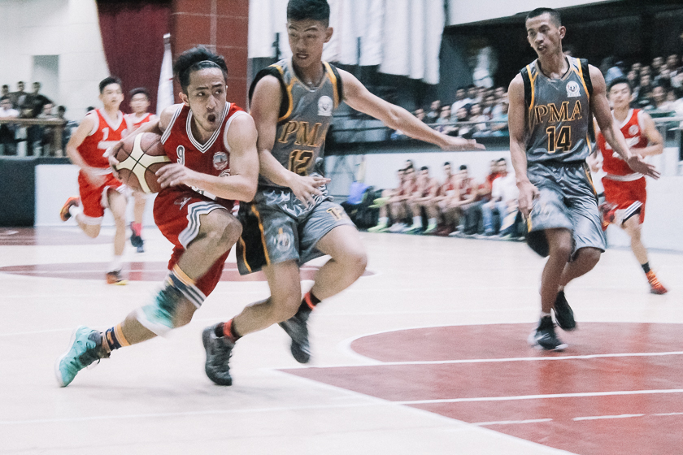
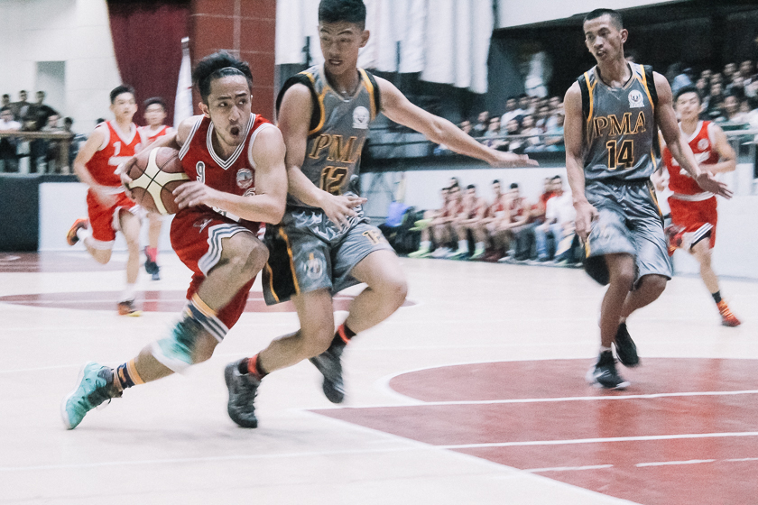

Intramurals1 : competed only within the student body intramural sports. 2 : being or occurring within the limits usually of a community, organization, or institution intramural squabbles. 3 : situated or occurring within the substance of the walls of an organ. In Junior HighSchool Students can join Cheering, Cheer Dancing and sports. In Senior HighSchool They have Cheerdancing, Icons, and Sports |
 

|
Pageantsa public entertainment consisting of a procession of people in elaborate, colorful costumes, or an outdoor performance of a historical scene. But the participants are the Students of the University. |

|
Karkarna Ti RabiiIt is an Event made by University of Baguio Where They celebrate Halloween Where Every Students can join from elementary to College. They can wear any costumes they like and Students who has the best costumes and performance will be awarded |


|
Cantatais a vocal composition with an instrumental accompaniment, typically in several movements, often involving a choir. It is an Event in Junior HighSchool Prep High and Science high. Where they sing songs and stage play the story of Jesus. |


|